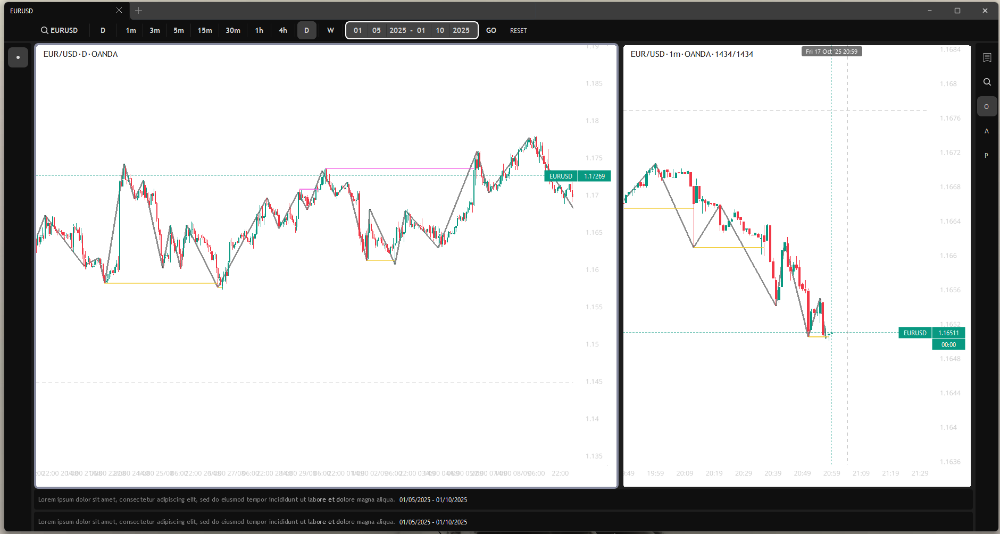

Hello there, I like
building software at
high velocity and
taking on challenging
problems.
Python | FastAPI | JavaScript | PostgreSQL | Stripe
Web Application | Development Timeline: 2025 | 2 Mos
Hooper Music Studio is a comprehensive management platform designed for music education businesses to streamline scheduling, billing, and administration. The application features a robust booking system that handles semester-based recurring lessons, real-time teacher availability, and conflict prevention. It includes a dedicated financial module for automated invoicing, Stripe payment processing, and a reschedule credit system. The platform offers secure, role-based portals for admins, teachers, and students/parents, and integrates advanced features like lesson escalations, an online instrument store, and automated PDF invoice generation to modernise studio operations.

Python | PySide6 | CuPy | NumPy | VisPy
Desktop Application | Development Timeline: 2025 | 6 Mos
Valgo is an algorithmic trading system engineered for the EUR/USD forex market. By integrating quantitative analysis with automated execution, it operates as an autonomous agent capable of managing positions 24/7. The application translates complex trading strategies into code, allowing for disciplined, consistent decision-making that removes emotional bias. Developed with expert domain input, Valgo leverages real-time data processing to identify and capitalise on market opportunities with precision.

socslingo
Java | JavaFX | SQLite | CSS |
Desktop Application | Development Timeline: 2024 | 6 Weeks
Socslingo is a desktop-based language learning application built with Java, JavaFX, and SQLite. The application features a robust content management system allowing users to create custom flashcard sets, which the system automatically converts into interactive mini-games. This project highlights capabilities in desktop application architecture, intuitive UI design using FXML/CSS, and complex logic for gamified learning experiences.
Seek Music
Python | Flask | SQLite | HTML | CSS | JavaScript |
Web Application | Development Timeline: 2023 | 6 Weeks
Seek Music is an online platform designed for music enthusiasts to discover and book concerts. Developed using Python, Flask, and SQLite, the application demonstrates rapid web application development principles. It features a custom search engine, database management for events and users, and dynamic content rendering. The platform handles end-to-end user flows from event creation to ticket booking and account management.
Useful
Human centric
Simple
Well made
I build high-quality software that solves real problems. I'm pragmatic and focused on execution, preferring to ship working code over theorising. When I take on a project, I own the outcome from start to finish. I work best in teams where technical excellence and clear communication are valued. My goal is simple: to create reliable, performant applications that users actually want to use.
My strength is Python, but I'm language-agnostic with experience in Java, C#, and web technologies. My foundation is in C and Computer Science & Computational Simulation Science.
I manage the full lifecycle—from Figma designs to deployment. I'm seeking high-impact roles that offer ownership and velocity.
Queensland University of Technology
Bachelor of Information Technology
Computer Science and Computational & Simulation Science.
"Tai led his team to build a polished full stack web application using modern tools and frameworks, delivering a result that ranked in the top percentile for quality and execution." See more
Anshul Malik Software Engineer & Academic
"Tai produced a wonderful computational analysis of the COVID-19 pandemic using the SEIRD model, showcasing a strong command of both coding and interpretation." See more
Dr James Bennett Senior Academic & Coordinator
"Tai demonstrated exceptional mastery in Rapid Web Development, delivering outstanding performance in both individual system design and complex team-based project execution." See more
Dr Jason Watson Academic Lead, Learning and Teaching, School of Information Systems, QUT
"Working in a team using Agile techniques and Java, Tai showed great leadership skills and was instrumental in the architecture and development of a well-designed project." See more
Fiona Cleary Software Development Academic, QUT
"Tai built an interactive project on political polarisation and COVID-19 mortality, combining clear, thoughtful visualisation with rigorous quantitative analysis." See more
Matt Begun Data Visualisation Specialist, QUT
I'm currently based in Brisbane and building Lewy Security, an end-to-end security automation platform. It features a high-signal workflow that combines codebase modelling with AI-assisted triage to help developers prioritise and remediate real risks through a guided, audit-ready CLI. I'm still open to new opportunities. (blog)